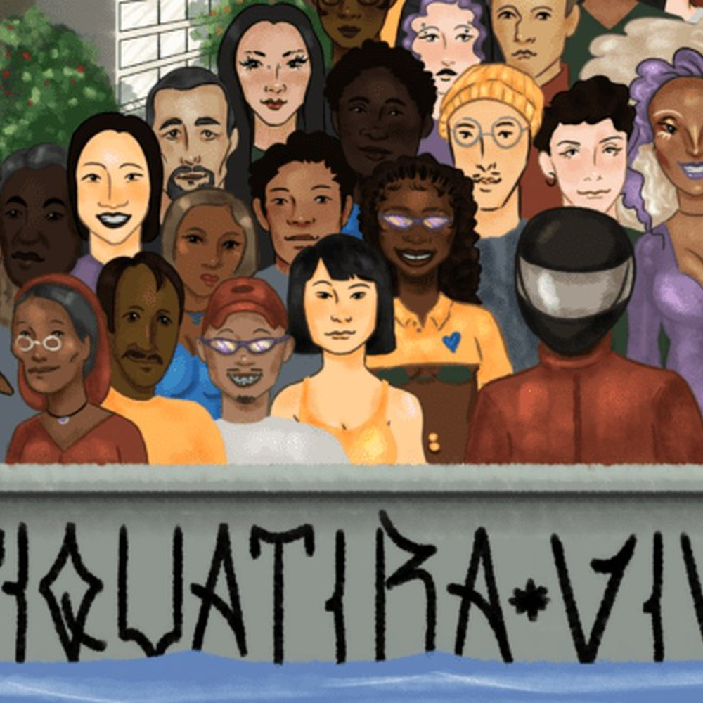

Projeto
((o))eco
O Oásis da Leste
Série jornalística sobre Córrego Tiquatira, território, pertencimento e recuperação urbana na Zona Leste de São Paulo.
Parceiros: ((o))eco, Bolsa Vandré Fonseca de Jornalismo Ambiental

Detalhes
- Atuação
- Pesquisa, apuração, produção documental, edição de áudio e narrativa jornalística sobre meio ambiente, território e desigualdades urbanas.
- Publicação
- Especial publicado por ((o))eco em 2026, com reportagens assinadas por Ramón Raquelly.
- Temas
- Jornalismo ambiental, Córrego Tiquatira, recuperação urbana, parque linear, justiça climática e política ambiental.